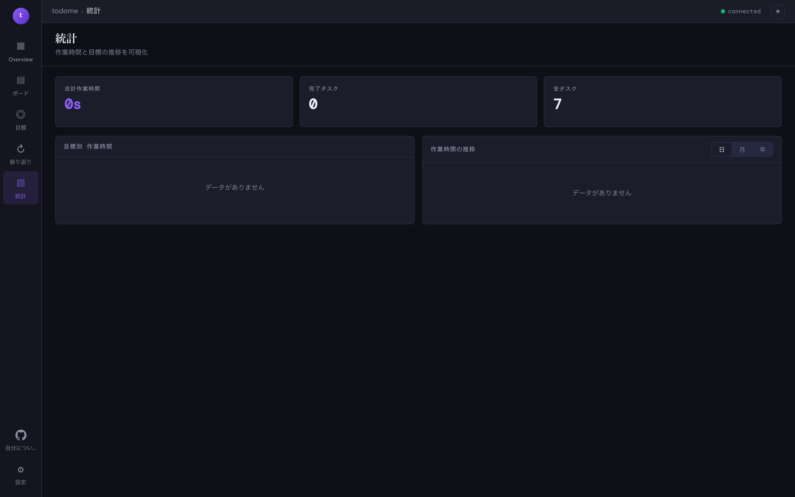

統計
記録した作業時間とタスクの進捗を可視化します。 目標別の時間配分と、日/月/年の推移を把握できます。

画面の見方
| 合計作業時間 | これまでに記録した全タスクの累積作業時間。 |
|---|---|
| 完了タスク / 全タスク | 完了カラムに入っているカード数と、全体のカード数。 |
| 目標別 作業時間 | 各目標ごとに積み上がった作業時間の内訳。どの目標に時間を使えているかを確認できます。 |
| 作業時間の推移 (日 / 月 / 年) | 選択した粒度での時系列チャート。直近の作業量の傾向を把握できます。 |
ヒント:
グラフが空の場合は、ボードでタスクを開いてタイマー(
▶)で計測を開始すれば、リアルタイムに積み上がっていきます。